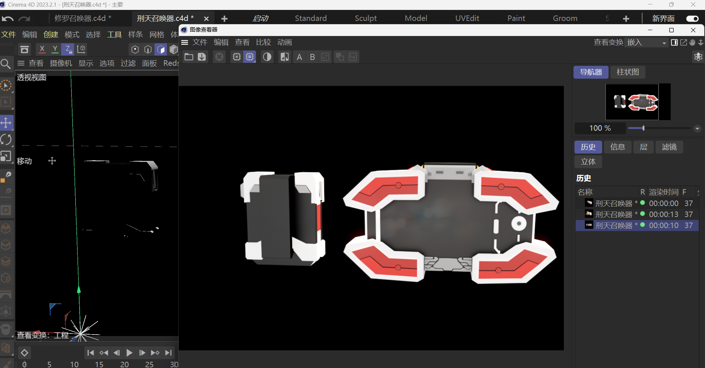
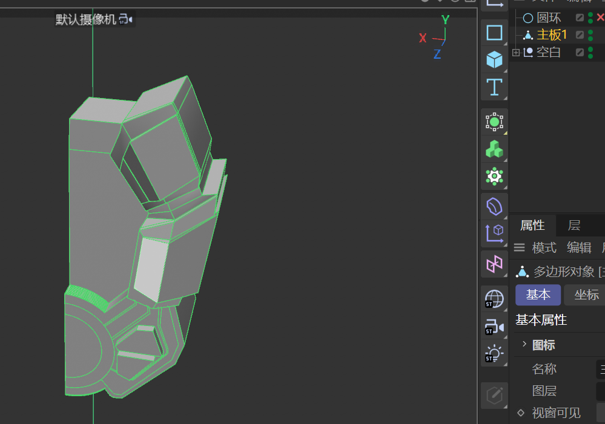
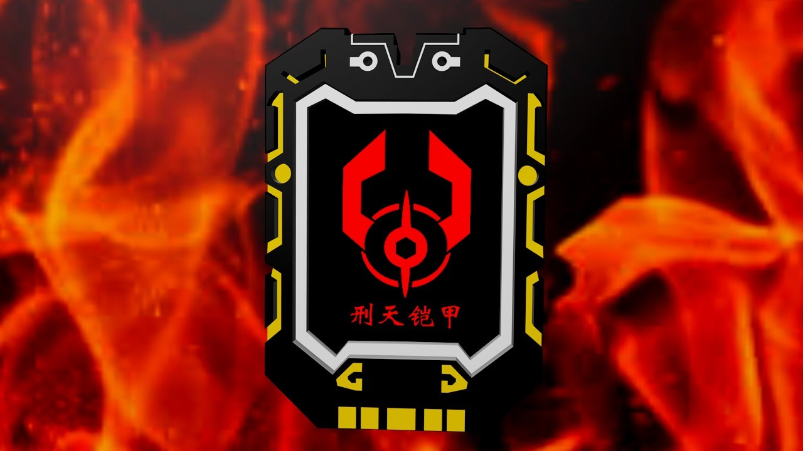

01 / Hard-surface
刑天召唤器
「铠甲召唤器」系列的第一件。一块可以展开的腕部装置，闭合时收成一片贴腕的板，展开后是一枚放射状的徽记。
- 类型
- 硬表面道具设计
- 性质
- 个人兴趣 / 同人非商业
- 年份
- 2026
- 工具
- C4D · Redshift · Blender
- 输出
- 静帧渲染

Design Notes / 设计说明
这是系列里最先做的一件，也是整套的基准件——后面两件的尺寸关系、拆件逻辑、材质分组都从它派生。
造型是从「可佩戴」往回倒推的。主体是一块贴腕的底盘，四片护甲以中心轴为圆心向外翻开，展开后成为一个放射状的徽章；闭合时四片收拢，厚度压在 3 厘米以内。中央是焱龙纹样的红色徽记，两侧的黄色结构条同时充当限位和视觉分隔——它既是零件，也是构图。
整件只用三种颜色：亮白护甲、正红装甲、哑光黑底。颜色越少，轮廓就越要准，所以所有转折都做硬切，不靠曲面过渡，只用 1–2 mm 的倒角去吃高光，让结构自己读出明暗关系。
硬表面的关键其实是"厚度感"。哪怕只有 2 mm 的一块板，也要让人相信它真的有 2 mm。
材质控制在三组：哑光塑料、拉丝金属、半透亚克力。渲染在 C4D 里用 Redshift 完成，背景的火焰是体积光配合合成叠加——目的不是火光本身，而是让金属边缘吃到一层暖反光，把主体从纯黑背景里推出来。
需要说明的是：这套作品的原型来自特摄作品《铠甲勇士》，属于个人兴趣创作，非商业用途，仅作为造型与渲染能力的展示。
Process / 制作过程
先在 Blender 里用白模把体块和比例定死，确认展开后的重心不会偏，再进 C4D 做倒角与切割。最后合体态和展开态并排校对尺寸。


